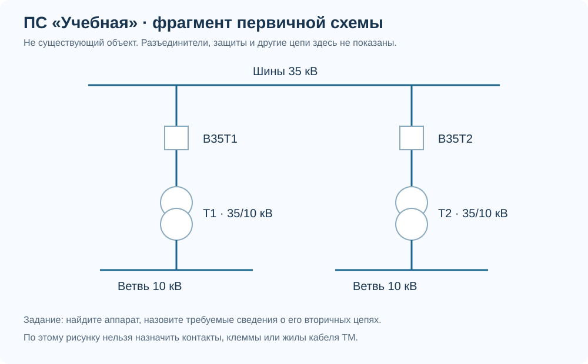
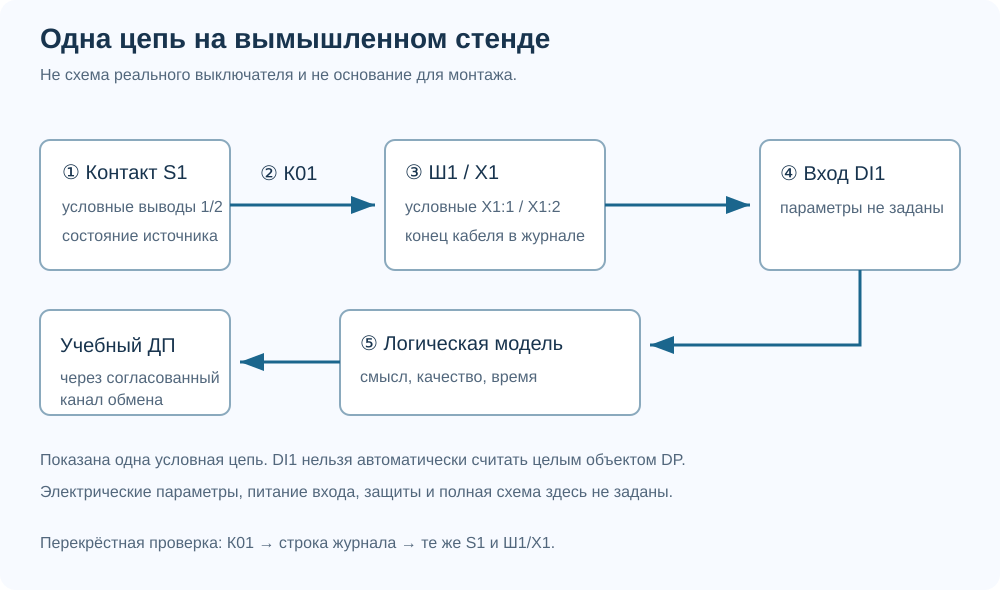

Учебная тетрадь · АСУ ТП Академия
Один объект. Связный комплект документов.
Вымышленная ПС 35/10 кВ «Учебная»: два выключателя и расширение ССПИ. Материалы помогают выполнить ограниченную задачу под проверкой наставника.
Не рабочая документация. Все обозначения и примеры искусственные. Схемы упрощены; отсутствуют данные для изготовления, монтажа и управления реальным оборудованием. Курс не присваивает квалификацию. Учебные допущения нельзя переносить на реальный объект.
1. Учебное ТЗ и входные данные
В существующую систему телемеханики условной ПС добавляются два выключателя 35 кВ с терминалами управления. Интерфейс и протокол существующей ТМ неизвестны. Требуется предварительная проработка расширения ССПИ и передачи информации в учебный ДП.
- По каждому выключателю: положение DP, неисправность SP, местный режим SP, три фазных тока, один двухпозиционный объект команды включить/отключить.
- Основной канал: проектируемая ВОЛС с возможностью TCP/IP. Конкретные точки, параметры и протокол обмена согласуются.
- Резервная сотовая связь только рассматривается. Требования, независимость и ограничения не предоставлены.
- Расчётная мощность выделенного учебного оборудования 180 Вт; требуемая автономия 6 часов. Условный КПД для грубой оценки 0,85.
- Паспорта устройств, карты сигналов, права ТУ, разрешения и блокировки не предоставлены. Их нужно запросить.

Что требуется получить
- Реестр исходных данных и вопросов.
- Структуру обмена с пометками неопределённостей.
- Матрицу 14 логических объектов с источниками и получателями либо запросами на их уточнение.
- Предварительный функциональный перечень оборудования.
- Оценку энергии резервного питания и ограничения расчёта.
- Перечень необходимых документов РД.
- Реестр рисков и замечаний, подтверждение наставника.
Полная рубрика и критические ошибки перечислены в руководстве наставника. Порог теста и отметки уроков не заменяют защиту работы.
2. Один сигнал: от контакта до строки данных
Следующий рисунок относится к отдельному вымышленному стенду. Он объясняет обозначения и перекрёстные ссылки. Это не подтверждённая схема подключения В35Т1 из мини-ТЗ.

- S1: условный источник состояния. Реальный источник должен быть подтверждён схемой и документацией.
- К01: обозначение связи на рисунке. Именно его ищем в кабельном журнале.
- X1:1 / X1:2: условные клеммы назначения. Они должны совпадать в схеме и журнале.
- DI1: условный вход стенда. Физический вход и логическое положение DP не тождественны.
- Логическая модель: на этом стенде показана только одна цепь; модель положения реального аппарата надо определить отдельно.
Проверьте: найдите К01 в учебной строке журнала. Какие данные ещё нужны для выбора кабеля? В эталоне они намеренно не выдуманы.
3. Как выглядит результат на разных этапах
Ниже не полные комплекты по нормам, а учебные фрагменты с пояснением логики. Состав реального выпуска определяют заданием, договором и применимыми требованиями.
ТЗ: требование и способ проверки
Учебное требование ТЗ-01: обеспечить передачу согласованного перечня информации по двум выключателям в учебный ДП.
Как проверять: по согласованной матрице сопоставить источник, значение, качество и приёмник каждой строки. Параметры времени и допустимых задержек должны быть заданы дополнительно.
Куда смотреть: требование описывает нужный результат. Оно ещё не указывает клемму, артикул модуля или IP-адрес.
ОТР: концепция с ограничениями
Предусмотреть узел ССПИ для сбора информации новых устройств и передачи в ДП по TCP/IP. IEC 104 рассматривается при подтверждении поддержки нужных функций обеими сторонами. Интеграцию существующей ТМ уточнить после получения документации.
Питание выделенного состава обеспечить согласно требованию автономии. Резервный сотовый путь рассмотреть отдельно после получения требований по связи и безопасности; независимость пока не подтверждена.
Куда смотреть: здесь видны границы и условия выбора. Неизвестное не спрятано за нарисованным шлюзом.
ПД: обоснование решения
Цель решения: сохранить существующий обмен и добавить информацию новых аппаратов. Предлагаемая структура должна обеспечивать согласованные функции, питание и взаимодействие с верхним уровнем.
Ограничения: состав устройств и вариант интеграции старой ТМ окончательно определяются по обследованию; требования к резервному пути и дистанционному управлению остаются открытыми.
Проверка согласованности: функции на структуре сопоставляются с матрицей сигналов и требованиями ТЗ. Расчёты и описания выполняются в объёме конкретного проекта.
Куда смотреть: перечислены причины и условия принятия решения, а не только названия оборудования.
РД: конкретное соединение и связанные ведомости
В учебном стенде связь К01: S1 (условные выводы 1/2) → Ш1, X1:1/X1:2. Дальнейшее подключение к DI1 показано только функционально. Марка, длина кабеля и электрические параметры не заданы.
В кабельном журнале используются те же обозначения. В перечне оборудования должна быть функциональная позиция соответствующего узла ввода. Этот учебный фрагмент непригоден для монтажа до определения полного состава цепей и параметров.
Куда смотреть: номер кабеля, оба конца и ссылки должны совпадать. Неизвестные параметры оформлены как вопросы, а не как закупочные данные.
Мини-практика в AutoCAD и Excel
- В отдельном учебном файле AutoCAD нарисуйте блоки S1, Ш1 и X1, связь К01. Не используйте реальную схему объекта.
- В Excel откройте CSV-шаблон журнала, сохраните рабочую копию XLSX и заполните условную связь.
- Переименуйте К01 в К02 на рисунке. Найдите, какие строки и ссылки нужно изменить в таблице.
- Передайте наставнику рисунок и таблицу вместе с перечнем неизвестных параметров. Проверяется согласованность, а не скорость оформления.
4. Условная карточка цифрового интерфейса
Эта карточка придумана только для арифметического упражнения. Это не паспорт, не действующий регистр ENIP/ЭКРА или другого производителя и не исходные данные мини-проекта.
| Параметр | Дано в упражнении | Что проверить для реального устройства |
|---|---|---|
| Величина | Ток фазы A | Назначение и единица величины |
| Метка поля | R_DEMO_01, не протокольный адрес | Фактическая карта адресов и правила нумерации |
| Тип | Беззнаковое целое в одном слове | Тип, размер, порядок данных |
| Сырое значение | 1234 | Условия обновления и достоверности |
| Масштаб | 0,1 А на единицу | Масштаб и возможный дополнительный коэффициент |
| Результат | 123,4 А | Ожидаемое значение при контрольном воздействии |
Задание: объясните, что будет при повторном применении масштаба; почему адрес поля не следует назначать по имени R_DEMO_01; чем отличается недостоверность от нулевого тока.
5. Найдите ошибки в комплекте
В этих фрагментах специально заложены противоречия. Автор ошибочно заявил комплект «готовым к монтажу». На предварительной стадии честное «Уточнить» допустимо, но не означает готовности к выпуску. Сначала заполните реестр, затем откройте эталон.
| Фрагмент | Условное содержимое с ошибками |
|---|---|
| Схема подключения | S1 → К01 → Ш1/X1 |
| Кабельный журнал | К10; S1 → Ш1/X1; прочие данные не заданы |
| Таблица сигналов | В35Т1; неисправность; SP; источник: пусто |
| Структура обмена | Основной канал + резерв через сотовый маршрутизатор |
| Перечень оборудования | Контроллер; основной сетевой узел; питание. Состав резервного пути отсутствует |
| Пояснение управления | «Команду отключения можно исполнять сразу». Права, разрешения и блокировки не согласованы |
Скачать пустой реестр · Эталон после выполнения
Закрытие замечания проверяют по исправленным связанным документам. Само слово «исправлено» в ответе не подтверждает устранение.
6. Связь пропала, число осталось
До отказа на учебном экране ток равен 120 А. В модели прекращается обновление от источника, а последнее число остаётся. Нужно определить, как оператор различит актуальное и устаревшее значение.
- Запросить требования к качеству, времени и задержке обнаружения потери связи.
- Назвать ожидаемую индикацию недостоверности согласно этим требованиям.
- Проверить восстановление актуального значения и качества после возобновления обмена.
- Записать фактический результат и свидетельство проверки.
Не назначайте таймаут по памяти. Не проводите отключения на действующей ПС ради учебного задания.
7. Файлы для самостоятельной работы
CSV: UTF-8 с BOM, разделитель «;». При необходимости импортируйте через меню данных Excel с явным выбором кодировки и разделителя. Сохраните свою рабочую копию XLSX; исходные шаблоны не содержат макросов.
- Таблица сигналов: шаблон · эталон 14 объектов
- Кабельный журнал: шаблон · условная строка
- Предварительный перечень оборудования
- Реестр исходных данных и вопросов
- Карточка проверки нормативного требования
- Замечания: шаблон · эталон
- Учебный протокол испытаний
- Учебная однолинейная схема · Разбор одной цепи · Эскизы RS-485
- Как читать и проверять нормативные источники